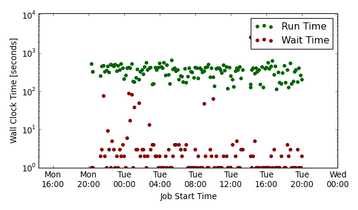
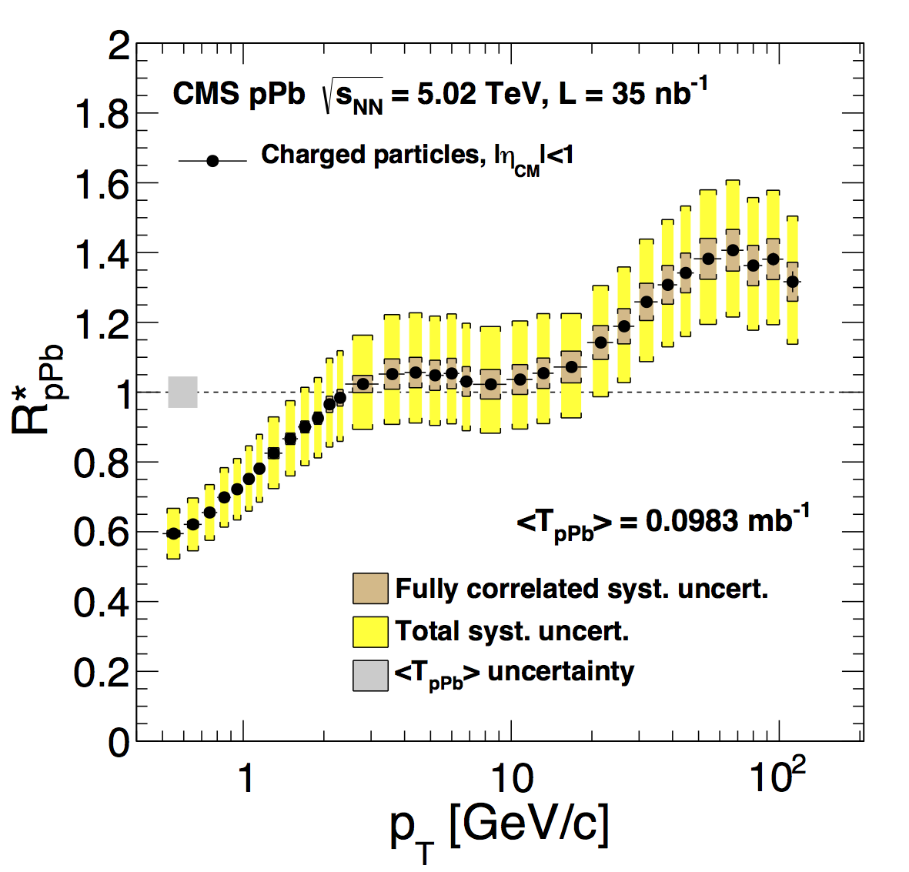

About Me

Previously a reasearch physicst employed at Vanderbilt University pursuing research in heavy ion collisions in collaboration with the Compact Muon Solenoid experiment, I have just begun a new career as a software engineer with Cloudant, an IBM Company
working with the cms collaboration has been a fantastic opportunity to combine my interests in computer science, mathematical modeling, and the physics of quarks and gluons while traveling the world as part of an international scientific effort.
You may view my resume here.
Computing
Computing has always been a hobby of mine, starting in high school when I spent weekends configuring network services on desktop linux systems while learning C and perl. Since becoming a professional physicist, I have spent several years performing data analysis and stochastic simulations in C++ and python frameworks.
My previous day-to-day responsibilities as a research scientist included developing and maintaining data transfer and monitoring tools for the Vanderiblt Tier-2 CMS computing facility which is a part of the Vanderbilt ACCRE facility.
 Snapshot of cluster performance using the AutoCMS monitoring system.
Over 1.5 Petabytes of collision data from the CMS experiment at the LHC are housed at this facility using the L-Store logisitcal storage framework developed at Vanderbilt.
Physics
From 2009 to 2015, I worked in collaboration with the Compact Muon Solenoid (CMS) experiment at the world's most powerful particle accelerator, the Large Hadron Collider (LHC), to study the properties of nuclear matter at extreme temperatures of over a trillion degrees Kelvin. The CMS experiment is a $500 million international detector system with excellent capabilites to precisely determine the momentum of charged particles created in collisions between protons or heavy nuclei.
 CMS Collaboration, Eur. Phys. J. C 75 (2015) 237 doi:10.1140/epjc/s10052-015-3435-4
By colliding two heavy nuclei at close to the speed of light, a high temperature bulk system can be created for a very short span of time, in which the protons and neutrons that comprise the nuclei are predicted to undergo a phase transition into a new state of nuclear matter often called a Quark-Gluon Plasma.
My recent work has focused on the measurement of charged particles produced in collisions between a single proton and a heavy nucleus, which helps to enhance the understanding of the various effects that modify charged particle production in nucelus-nucleus collisions relative to proton-proton collisions.